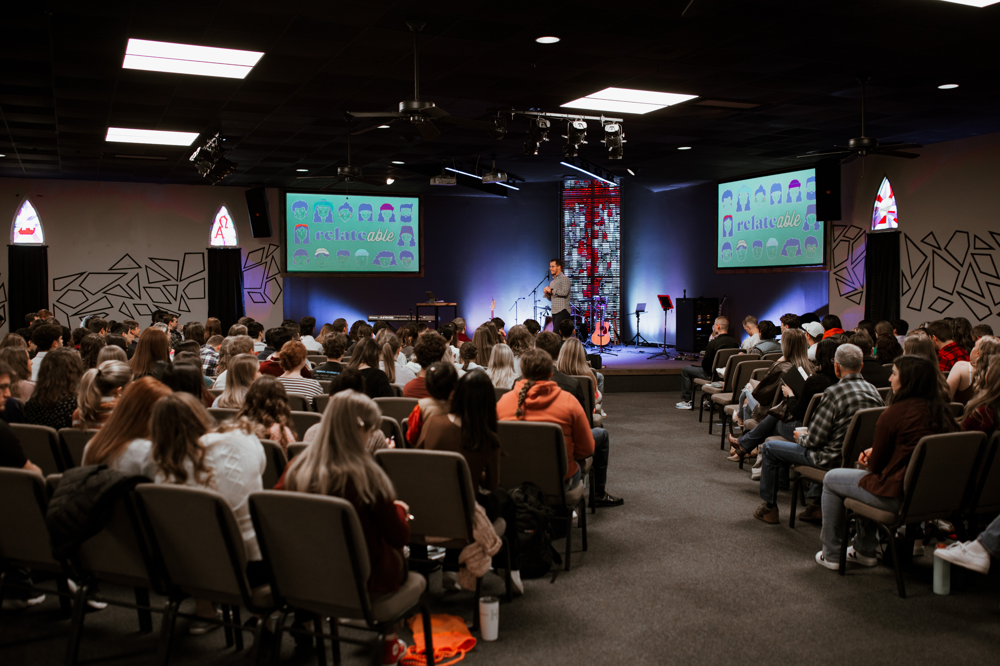
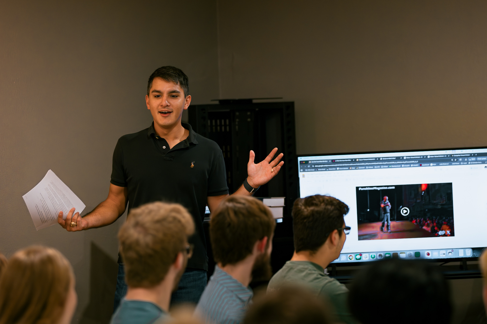

Sermons
One skill I've been developing is in exegetical preaching. Just as Jesus spent time proclaiming the way of the Kingdom of God to the multitudes, we also should help our people discover the lifestyle that comes with being a follower of Christ.
I believe in a highly exegetical teaching process, or that a preacher's sermon should be firmly rooted in the truths of the Scriptures. It should also be highly pastoral, meaning that the specific audience in front of you should always be on your mind as you teach.
I've had the chance to prepare several sermons, and you can watch my first one below!

Theology and Coffee
As I've mentioned, the students at our church are incredibly smart and extremely curious about the Lord and His ways. Since many of our Fellows are in seminary classes, we take the opportunity to teach higher level theological concepts to those who desire it. What better way to start off the week than with a cup of coffee and deep theology?
I've had the chance to organize and teach two Theology and Coffees, one on the topic of Textual Criticism (reliability of Scripture) and the other on Ecclesiology (the study of the Church). These have been incredibly life giving, and especially as nearly 60 students attend each time with rich questions and deep curiosity.
If you want to check out my Theology and Coffee on Textual Criticism, check it out below!

